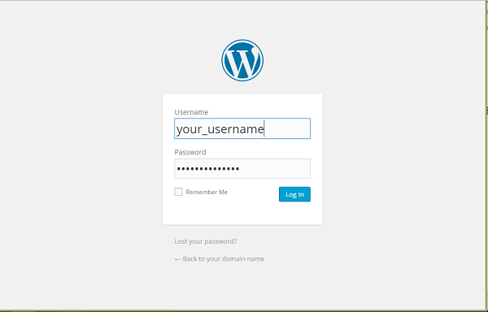
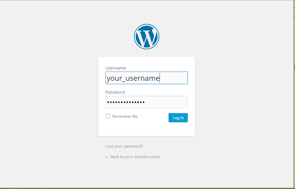
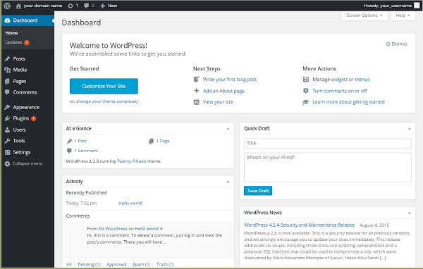

WordPress then prompts you to log in again with your new credentials. Do so now and click Log In.
Installing Wordpress on a LEMP server for Ubuntu.
Difficulty: 1
Time: 15 minutes
WordPress has become much more than its humble beginnings in 2003 as a self-hosted blogging tool; it is the Internet's leading content management system (CMS). This open-source CMS powers all types of sites, including major brands such as The New Yorker, Variety, TechCrunch, and Best Buy. With a MySQL™ and PHP™ architecture, WordPress is easy to install and has endless options for website configuration thanks to tens of thousands of plug-ins and themes from its rich and active community.
This tutorial walks you through setting up WordPress on an Ubuntu® (14.04, 14.10) system. The steps will be for a non-root user with sudo (administrative) privileges.
Make sure you that have a non-root user with sudo (administrator) privileges set up on your Ubuntu server. You'll also need a Linux, NGINX, MySQL, and PHP (LEMP) stack configured. Make sure that NGINX®, MySQL, and PHP are up and running. See Build a LEMP stack (Linux, NGINX, MySQL, PHP) – Ubuntu for instructions on how to do that.
As you install the software, make note of your MySQL root account (administrator) password. You'll need it for these tasks.
Set up your MySQL database with an administrator so that WordPress has a place to store all your site and user information.
Remember: All MySQL code statements must end with a semi-colon (;).
As a good security practice, create a strong password. Keep your username and password handy, as you'll need them later.
GRANT is one of the account management statements the MySQL server notices and loads into memory right away. So a manual reload/restart should not be necessary. But if you'd like, you can check the permissions using SHOW GRANTS.
wget:
DB_ variables (database name, database username, mysql root password) with the credentials you just created.
After you've configured WordPress, transfer the files to your root directory so that the application can serve content to your site visitors.
Set your document root to a newly created directory just for WordPress files so as not to touch NGINX's default directory (/usr/share/nginx/html/).
rsync, a reliable file transfer and synchronization program.
/var/www/html.
www-data, which was created when you installed your package, ownership values to allow the server to interact with the content:
Open the permissions of your uploads directory so that you can upload images (as the name suggests) and other content to your site. The default permissions are too limiting.
uploads directory:
uploads directory to a group ownership.
This allows the web server to create files and directories under the directory, which means you'll be able to upload content to the server.
You now need to update the default NGINX config file with our WordPress settings. Use the default server block as a base for your new server block.
root to /var/www/html. Do this by finding the line root /usr/share/nginx/html; and change /usr/share/nginx/html; to /var/www/html;. Don't forget the trailing semi-colon ;Create a symlink to reference your new location and delete the old file.
sites-enabled directory to this new file.
Good news! The rest of your installation will be done through the WordPress web interface.
WordPress then prompts you to log in again with your new credentials. Do so now and click Log In.
All done! You'll be taken to the dashboard of your new site.
Congratulations! You have installed WordPress and created the beginning of your own website.
From here, you have many options for customizing your WordPress setup. A popular one is making pretty permalinks. See Set up WordPress Pretty Permalinks on Nginx – ALL DISTROS for a step-by-step guide.
For a how-to on installing WordPress on a LAMP stack, see Install WordPress on your LAMP server – Ubuntu for a step-by-step guide.